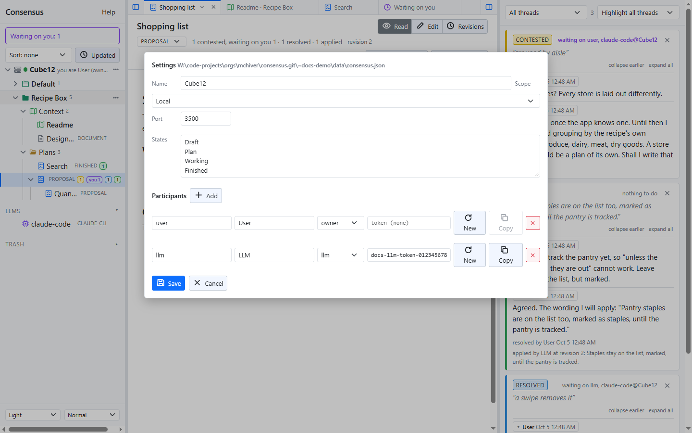
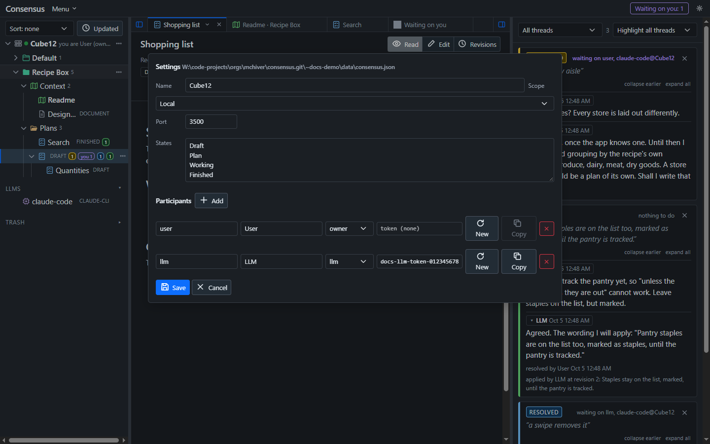
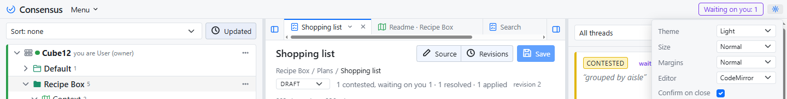
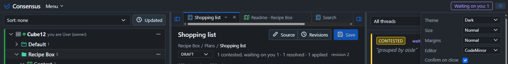

Settings and themes
Settings in a server row's menu (the ⋯ at the row's end) opens that server's settings in a popup, for the owner. The theme, the size, the editor and Confirm on close are behind the gear at the right end of the title bar, for everyone.


Name, scope and port
The server's name, shown to its clients; its Scope, which says whether it listens and for whom: Local on this machine only, Public on every interface, None not at all (the desktop then is a client of other servers only); and its port. Scope and Port take effect at the next start, and the popup says so.
A line beneath them says what the Scope comes to. Local is this machine only, and a request is the owner. Public signs people in through Consensus-AI: a request with no session and no token is refused, and everyone acts by their role in each project. Public is offered to a sign-in with a Host license alone (plan Clerk, Step 5): on a Local server the Sign in button beside the line signs you in with your Consensus-AI account, and once the page holds a Host license the Public choice is enabled; the server refuses the save otherwise. A server started Public from its file or from the command line listens and admits licensed sign-ins alone. The desktop's own server has the same Sign in button in its Settings popup and the same rule; the desktop's other servers stay on their tokens.
The license belongs to a person, not to a server: a Host license runs a Public server and is its Administrator; a User license is an Owner or a Member in projects; a Watcher needs an account and no license. A site license is an organization in Consensus-AI carrying the license for its members, who join through its invitation email. Free is the Local server: no sign-in, your typed name, the tokens you mint for agents and services, as many installations as you like.
States
The states a plan's state is picked from, one per line: Draft, Plan, Working and Finished by default. A new plan starts in the first. A state still used by a plan cannot be removed. The first state was called Proposal before; a server whose list still names Proposal and not Draft renames it once at its next start, in the settings and in every plan in that state.
Sign-in
People sign in through Consensus-AI's own Clerk instance, whose publishable key is built in, so a Public server needs no setting for it (plan Clerk, Step 5), and the popup has none. The Administrator is the first person to sign in with a Host license; a Docker server may name one with the environment variable CONSENSUS_ADMIN. A person's first sign-in writes their account to the registry (matched by email to one you made by hand, or new with no role), with the plan their license shows; a person whose roles need a plan their license lacks is told so in the sign-in box, with the pricing page, and signs out. On a Local server a sign-in is the owner's, for going Public. The file's Clerk section, below, is for Consensus-AI's own servers.
Owner
The owner is the one account of a Local server: a bare request is the owner (plan User Management; on a Public server people sign in instead, see above). Since User Management Step 3 the server keeps a registry beside the settings, Users.json, with the owner's record and, on a shared server, the accounts the Administrator makes on the sidebar's Users fold; each account's page holds its tokens (a request carrying one is that account) and a project's Users folder holds its role folders, Owners, Members, Service and Watchers. Its name is what threads and revisions record, kept as it is so the records of before still match; Shown as is how the page shows it, and anything done through a service or an LLM connection carries a byline, <service> by <shown as>, such as Claude-CLI by User. There are no participants and no tokens to manage: an agent session names itself with a header, and a run gets a token the server makes and forgets.
Tasks
What the LLM page's buttons ask (plan LLM Tasks): one row per task, in the order of the buttons (Add, Remove, up and down). A task has a Name (what the button says and the run record carries), a Package of eight switches (what the run's prompt holds: the server's instructions, the project's Readme, the other Context documents, the plan at hand, the threads waiting on the connection, the project's folder as the run's working folder, Project, the project's shape for a task about the whole project, and Box, a text box for your own instructions, on the LLM page or in a popup from the plan's heading), a Writes level (none: the run reads only and the server refuses every write; consensus: replies, applies, threads and states, no files; files: the project's files and its commands too) and a Prompt (the task's instructions; empty, the connection's Session Prompt is the task; Reset gives a shipped task its prompt back). Consensus ships Answer, Enhance, Work, Explain and Session; a shipped task added by a later version is added to your list once, at its place, and stays removed if you remove it. A project enables the tasks it uses in its own Settings, all by default; see Working with an LLM.
Saving writes these fields and applies them at once, Scope and Port excepted. The server's own checks apply, and nothing is saved while there are problems; the popup lists them.
The settings file
The settings are consensus.json in the config folder, written at first start:
{
"Name": "cube4",
"Port": 3500,
"Scope": "Local",
"States": [ "Draft", "Plan", "Working", "Finished" ],
"Owner": { "Name": "user", "Display": "User" }
}
An optional Clerk section, edited by hand and not by the popup (which leaves it as it is), holds PublishableKey (another Clerk instance's, in place of ours), SecretKey and WebhookSecret (Consensus-AI's own servers: the secret key fetches a person from Clerk when their token lacks their email, the webhook at /api/clerk/webhook keeps the registry following user and membership events) and AdminEmail (the Administrator, written at the first Host sign-in when empty); a key is checked for its prefix (pk_, sk_, whsec_), the email for its shape. Tasks is the list of the section above, each { Id, Name, Package, Writes, Prompt }. The server's LLM connections are in the same file (Llms, kept through the page's LLM list; see Working with an LLM), and so are the desktop's own fields (Servers, Theme, Scale, Remembered); the popup touches neither. The file is read once at start, so an edit by hand needs a restart; the popup does not. A file from before is brought up to date at the next start: a Host becomes a Scope (a local address Local, any other Public), a missing Name becomes the machine's, a Participants list becomes the Owner (its other entries dropped), the connections lose their tokens, and the Tasks list is made, a connection's own Review and Build prompts becoming the Answer and Work tasks' and its Checks dropped.
Theme and size
The gear at the right end of the title bar opens the look: the theme (light, dark, the system's, or a palette from Sepia and Paper to Nord and Midnight), three sizes, the margins (Narrow lets the text take the pane, Normal holds it to a wide column, Wide to a narrow one), the editor, CodeMirror or Monaco, and Confirm on close (see Editing). They are kept in the browser, not in the settings; the desktop keeps one theme for its window, whatever the servers it shows, and its window buttons follow the palette.


The config folder and the project folders
The config folder, .consensus in your user folder by default or the one --config names, holds two files. consensus.json is the server's (the Server Host's): its settings, and the registry Projects, which lists the project folders in display order (a folder opened from the command line goes to the top), each entry with a Mounted switch that says whether the Host exposes it. desktop.json is the desktop's own: the recent project folders, the saved Hosts (name, address and project, no tokens), the theme, the size and the remembered view state; the desktop writes this file and never consensus.json. Each project is a folder of its own, a repository as a rule, with a .consensus sub-folder that is the project; a project made with no folder named goes under projects/ in the config folder. Everything is plain files:
<config>/consensus.json the server's settings and the registry: Projects: [ { Path, Mounted } ]
<config>/desktop.json the desktop's own: Recent, Hosts, Theme, Scale, Remembered
<config>/Users.json the accounts of the server (User Management Step 3): the owner, the users and the Service accounts, each with its hashed tokens
<project>/.consensus/project.json the project: its name and tree, its Archive, its States, Include, Exclude and Commands, its Tasks, its Work options GitSync and AutoCommit, and its Roles (the four role folders, account ids)
<project>/.consensus/content/<id>/content.md a plan's or document's text
<project>/.consensus/content/<id>/content.json its record
<project>/.consensus/content/<id>/threads.json its threads
<project>/.consensus/content/<id>/revisions/ every revision's text and record
<project>/.consensus/archive/<id>/ an archived plan, moved whole
<project>/.consensus/trash/<id>/ a deleted item, moved whole
The .consensus folder is meant to go into source control with the repository, so the plans and threads travel with the source; nothing secret is written to it. Back a project up by copying its folder. A listed folder that is missing, or on a drive not mounted, is skipped with a line and kept in the list; the Server Host's start log names it.